Rose Period
1901-1906Consists of more cheery works of art (makes a change from prostitutes) with brighter colors. I presume he ran out of blue and green and had to use something else. These bright pieces featured many circus people
 Family of Salt
Family of Salt
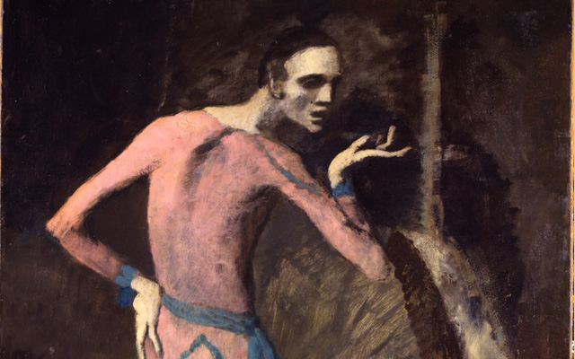
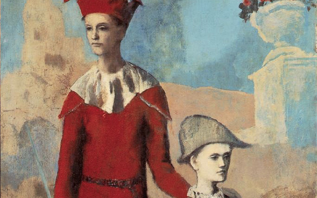
1903
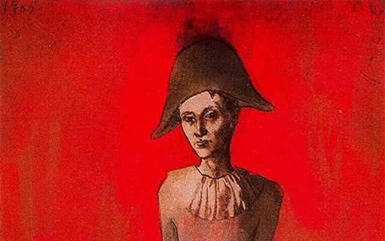
bla bla
 si si si
si si si
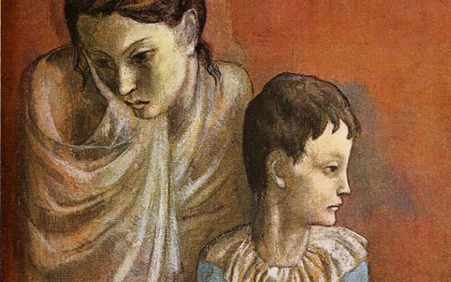
hola senor
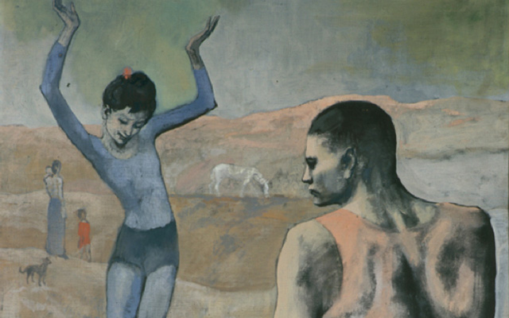
no lo se
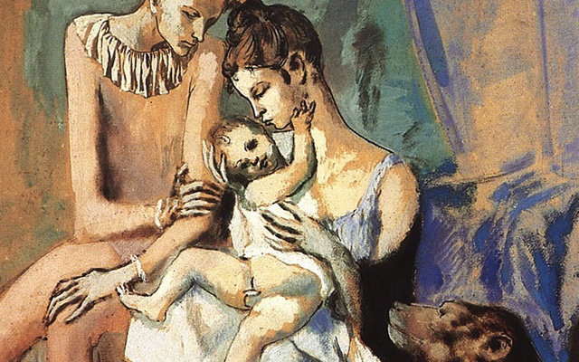
quiero comer ahora
“Colours, like features, follow the changes of the emotions”
CUBISM PERIOD
1901-1906Analytic cubism (1909–1912) is a style of painting Picasso developed with Georges Braque using monochrome brownish and neutral colours. Both artists took apart objects and "analyzed" them in terms of their shapes.
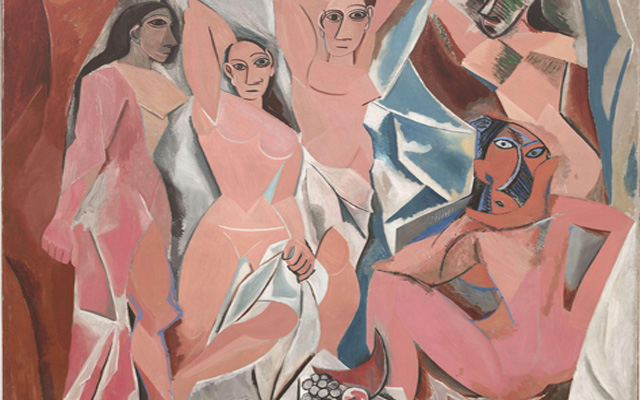
bla bla
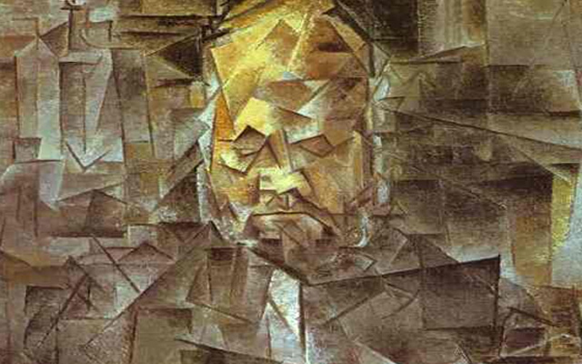
si si si
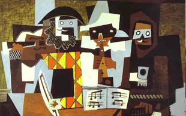
hola senor
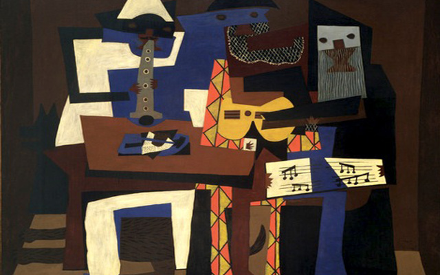
no lo se
 quiero comer ahora
quiero comer ahora
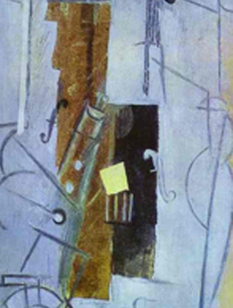
la ultima parte
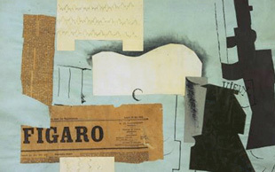
no lo se
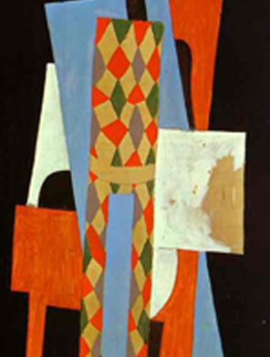
la ultima parte
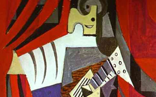
no lo se
"it took me 2000 years to sober up